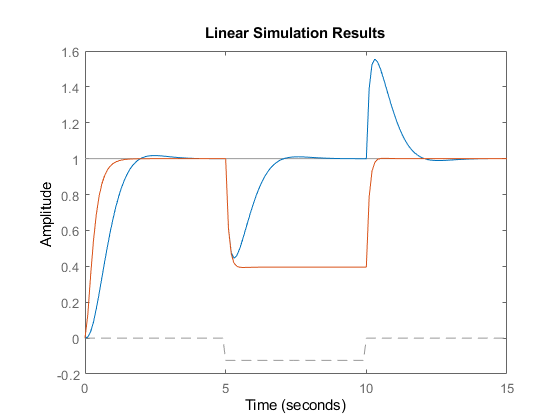
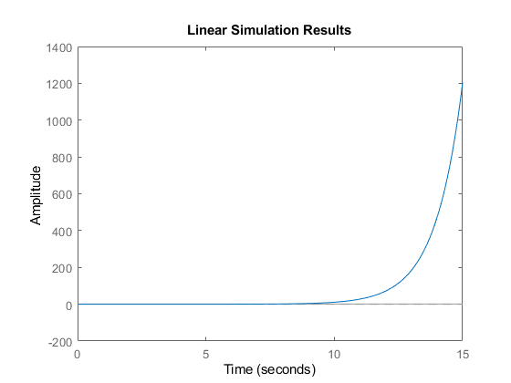
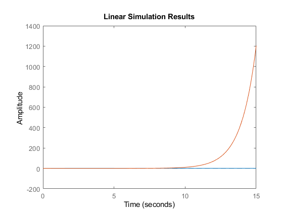

s = tf('s');
R = 2.0;
L = 0.5;
Km = 0.1; Kb = 0.1;
Kf = 0.2;
J = 0.02;
Kff = 4.1;
C1 = 4.1;
K=5;
C =K/s;
dni=21050001;
rng(dni);
g1=Km/(L*s+R);
g2=1/(J*s+Kf);
gff11=C1*feedback(g1*g2,Kb)
gff12=feedback(g2,g1*Kb)
Gffw=[gff11 gff12]
g11=(feedback(C*(feedback(g1*g2,Kb)),1))
g12=(feedback(g2,g1*(-Kb-C),1))
Gw=[g11 g12]
Td = -0.1+0.1*(rand-0.5);
t1 = (0:0.1:15)';
r1 = ones(size(t1));
t1 >= 5;
t1 < 10;
(t1 >= 5 & t1 < 10);
p1 = Td*(t1 >= 5 & t1 < 10);
u1 = [r1 p1];
figure(1)
lsim(Gw,Gffw,u1,t1)
g21=feedback(C*(feedback(g1*g2,Kb)),1)*(1/g2)
g22=feedback(g2*(-Kb-C)*g1,1)
GTm=[g21 g22]
figure(3)
lsim(GTm,u1,t1)
figure(4)
lsim(Gw,GTm,u1,t1)
gff11 =
0.41
------------------------
0.01 s^2 + 0.14 s + 0.41
Continuous-time transfer function.
gff12 =
0.5 s + 2
------------------------
0.01 s^2 + 0.14 s + 0.41
Continuous-time transfer function.
Gffw =
From input 1 to output:
0.41
------------------------
0.01 s^2 + 0.14 s + 0.41
From input 2 to output:
0.5 s + 2
------------------------
0.01 s^2 + 0.14 s + 0.41
Continuous-time transfer function.
g11 =
0.5
----------------------------------
0.01 s^3 + 0.14 s^2 + 0.41 s + 0.5
Continuous-time transfer function.
g12 =
0.5 s^2 + 2 s
----------------------------------
0.01 s^3 + 0.14 s^2 + 0.41 s + 0.5
Continuous-time transfer function.
Gw =
From input 1 to output:
0.5
----------------------------------
0.01 s^3 + 0.14 s^2 + 0.41 s + 0.5
From input 2 to output:
0.5 s^2 + 2 s
----------------------------------
0.01 s^3 + 0.14 s^2 + 0.41 s + 0.5
Continuous-time transfer function.
g21 =
0.01 s + 0.1
----------------------------------
0.01 s^3 + 0.14 s^2 + 0.41 s + 0.5
Continuous-time transfer function.
g22 =
-0.01 s - 0.5
----------------------------------
0.01 s^3 + 0.14 s^2 + 0.39 s - 0.5
Continuous-time transfer function.
GTm =
From input 1 to output:
0.01 s + 0.1
----------------------------------
0.01 s^3 + 0.14 s^2 + 0.41 s + 0.5
From input 2 to output:
-0.01 s - 0.5
----------------------------------
0.01 s^3 + 0.14 s^2 + 0.39 s - 0.5
Continuous-time transfer function.
  